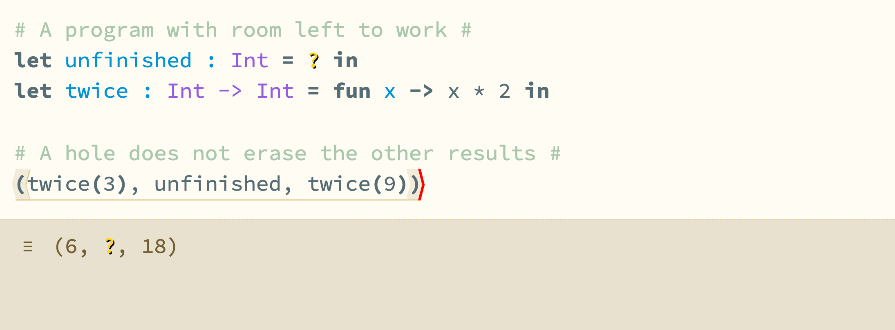
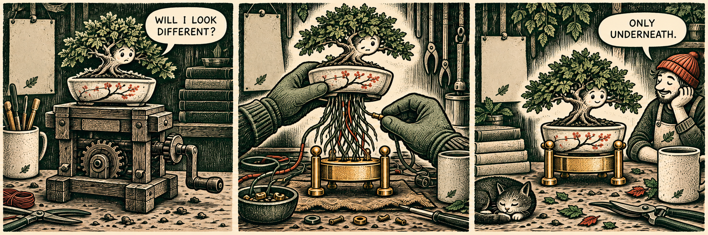

{kind=link}
New roots.
Bonsai takes over the editor’s machinery. Labeled tuples learn to line up. A warning policy gets a second look.
In this issue
The big landing
MERGED INTO DEV / #1400
Same editor. New machinery.
{kind=link}

Matt Keenan’s Bonsai migration reached dev on October 2, merged by Cyrus Omar. It replaces the Incr_dom application wrapper while retaining Hazel’s model and update machinery. The familiar editor is the point: the change concerns how that interface is driven, rather than a new language form or panel.
The new entry point uses a Bonsai state machine. An injected action reaches Hazel’s update function, which returns the next model; effects can schedule further actions. Initial loading still begins with the saved model or a blank one. That continuity makes this a migration of the application’s outer structure, not a rewrite of every interaction.
The awkward part is startup. Observers, clipboard focus, command-palette setup and the initial evaluation worker cannot all be treated as ordinary drawing. The patch introduces an explicit Startup action, dispatched once after the first display, and moves that setup into the update layer.
Caret scrolling and saving after an idle interval remain associated with post-display work. Their presence in the diff is not a claim that every persistence or scrolling problem is solved. For contributors, the immediate consequence is a new place to trace the path from an event to a model change—and a more explicit boundary between starting the application and rendering it.
Under the surface
BONSAI / ACTIONS AND EFFECTS
What happens after the first display?
The view exists; the one-time guard allows startup.
Inject into the state machine; run on_startup.
Observers, command palette, clipboard and initial evaluation.
After initialization, later actions continue through the model/update/view path.
The migration is compact enough to read as a piece of architecture: twelve files, with 195 added and 157 removed lines in the merge diff. Most of the interesting work is at the boundary between the framework and Hazel’s existing update function. The editor’s language implementation is not being transplanted alongside it.
A Bonsai toggle guards the initial effect. After the interface has first been displayed, that effect injects Startup. The action reaches Update.on_startup, where the code can establish the font resize observer, initialize the command palette, arrange clipboard focus and send the evaluator its initial work. Operating-system detection also belongs to that setup.
Subsequent actions use the same state machine’s update path. The distinction matters when investigating something that happens only on a fresh load: initialization is now an action one can look for, rather than an assortment of setup tucked into the old application wrapper.
Alexander Bandukwala’s review follows the migration into its less glamorous edges. He asks whether the changed lockfile records dependencies the patch actually needs or simply the versions installed locally. Matt explains the small opam-version differences. The exchange is a useful reminder that a framework migration arrives with a build environment, not just a new main function.
The review also asks whether the now-unused State argument should disappear from the update interface. It does. That is a small deletion with a practical benefit: the signature stops suggesting that an extra state channel remains part of the application’s contract.
There is no new benchmark attached to this story. The observable result is that a historical dev build can load, edit and evaluate a program through the new wrapper. Claims about improved performance, easier future features or eliminated bugs would need their own evidence. The architectural gain visible here is the explicit handling of startup and the removal of an obsolete interface.
The branch garden
MERGED INTO LABELED-TUPLE-REWRITE / #1399
Names change the alignment.
Fully labeled components can be aligned by name. Positions alone are no longer enough.
Unlabeled components should keep their relative order. Mixed and duplicate cases need explicit rules.
Proposed test properties / labeled-tuple branch
A second substantial change lands somewhere other than dev. #1399 merges into labeled-tuple-rewrite on September 27, extending elaboration with label insertion and reordering. It is part of the branch’s evolving treatment of tuples, rather than a feature available in this week’s shared build.
The motivating distinction is between a component’s position and its name. Once labels participate in matching, elaboration may need to supply a missing label or rearrange components to meet an expected shape. That work cannot be reduced to sorting the source text: the unlabeled parts still have positional meaning.
The review makes those expectations concrete through proposed properties. Unlabeled values should not silently reorder. Fully labeled tuples should tolerate a different ordering of the same names. Cases involving duplicates and unequal lengths need explicit rules. These are questions about which programs mean the same thing, not merely how tuples should be printed.
The tests proposed in the discussion are more valuable than a single agreeable example. Permuting a fully labeled tuple can exercise many arrangements; preserving the order of unlabeled components checks a different invariant. A test generator that confuses the two would certify the wrong behavior.
A follow-up from @WondAli asks about deduplicating the rearrangement implementation after the merge. There is a familiar pressure here: getting a new elaboration path working is one job, making its several cases share the right machinery is another. The branch label matters because that integration work is still local to the experiment.
Nearby, the merged #1401 improves statics and elaboration test helpers. Alexander and Matt discuss the readability of fresh identifiers in expected results. A type-level assertion is easier to understand when the test expresses the intended function type instead of forcing the reader through incidental identity bookkeeping. That is quiet infrastructure for precisely the kind of design work labeled tuples require.
At the workbench
ONE MERGE, TWO OPEN DESIGN THREADS
Warnings need somewhere to land.
The week’s smaller changes expose decisions about what should stop a build—and what should stop an evaluation.
A warning policy, then its counterproposal. The merged #1378 centralizes warning behavior in the Dune workspace: release builds treat warnings as errors, while development builds allow them. That lowers friction while code is in progress, but it changes what a successful local build can tell its author.
On October 3, #1405 opens with a narrower approach: make development warnings fatal again, except for unused-code categories. Its rationale is operational. Dune may print a warning on the first build and omit it on a subsequent incremental one; a serious warning can therefore disappear from immediate attention without having been fixed.
The second PR is still open at the week’s cutoff. The two proposals should not be collapsed into one settled policy. The useful question is which warnings are expected scaffolding during editing, and which should reliably force a contributor to stop and look.
A very noisy action. Issue #1403 reports that every action is being printed to the console. #1404, merged October 2, removes the debug output. This is the kind of tiny cleanup that changes the experience of investigating everything else: a console full of routine editor events makes the exceptional event harder to find.
When is a value finished enough? The open deferrals work in #1402 raises a more semantic stopping question. A deferred application behaves in some respects like a lambda-like value, but casts and evaluation operations may demand different degrees of completion.
The October 1–3 discussion distinguishes req_value from req_final. Treating those requirements as interchangeable would erase the distinction the feature is trying to express. The design question is not simply whether an application is unfinished; it is whether the surrounding operation can use the result at that stage.
That places deferrals beside labeled tuples for a reason. Both need elaboration and runtime behavior to agree about structure that may be only partly determined. A small source expression can conceal a fairly exact contract between the static and dynamic parts of Hazel. Neither thread is a dev landing this week.
Tests as a common language. The new test helpers in #1401 give the week a practical counterweight to those open designs. Readable assertions let a reviewer distinguish a semantic expectation from the incidental representation used to check it. As the branches grow, preserving that distinction will make their failures more useful than a dump of fresh identifiers.
The instrument panel
27 SEPTEMBER–3 OCTOBER / UTC
Four landings on dev. One on a branch.
PRs opened
PRs merged
issues opened
Gray: all commit objects · Green: Claude co-author credit · Red tick: signature header
Daily counts as a table
| Date | All | Claude credit | Signature header |
|---|---|---|---|
| 2024-09-27 | 6 | 0 | 0 |
| 2024-09-28 | 0 | 0 | 0 |
| 2024-09-29 | 1 | 0 | 1 |
| 2024-09-30 | 2 | 0 | 0 |
| 2024-10-01 | 4 | 0 | 4 |
| 2024-10-02 | 4 | 0 | 3 |
| 2024-10-03 | 0 | 0 | 0 |
The merge map matters. The five merged PRs include Bonsai, the statics-test helpers, the warning policy and the console cleanup on dev. Label insertion and reordering lands on labeled-tuple-rewrite. Counting all five without their destinations would overstate what someone opening the shared editor can try.
The commit graph tells a narrower story: seventeen objects in the week are reachable from the October 3 dev head, thirteen of them non-merge commits. These are commit objects dated within the window, not seventeen distinct features or seventeen equal units of work.
People in the review. Matt Keenan carries the Bonsai transition; Alexander Bandukwala follows its dependencies and update interface while pursuing the tuple work. Cyrus Omar merges the framework change and nearby dev work. The named contributions are clearer in the PRs than in a ranking of commit authors.
Eight objects contain a Git signature header. None contains the agent co-author trailers counted here. A signature is an authentication mechanism; an agent credit is a declaration of involvement. Neither establishes how the uncredited code was written. The absence of a trailer is not a human-only certificate.
17 unique objects; 13 non-merge. UTC committer dates; reachable from 35629e93f2. Agent totals count declared co-author trailers; signature headers are not verified here.
The fiction department
A SMALL RELOCATION
Please mind the roots.
{kind=link}

Still on the bench. The warning proposal leaves a concrete question for the next build: can the development profile stay forgiving about unused scaffolding while making other warnings impossible to overlook? The open PR draws that boundary more narrowly than the policy that just landed.
For labeled tuples, the next informative examples are the awkward ones: a mixture of labeled and positional components, duplicate labels, or a shape that does not match in length. Those cases say more about the branch’s semantics than another successful permutation of two named fields.
For deferrals, the point to keep watching is the consumer. A result that is adequate for one operation may still be too incomplete for another. Making that distinction visible in tests will help separate intentional delay from an evaluator that has simply stopped too soon.
The cover. A bonsai rests on a keyboard-like tray while its roots are transferred to a new support. The image borrows the framework’s name literally, then treats startup and event wiring as the less visible work below the leaves. The gardening tools and brass hardware are illustration, not claims about the implementation.
The comic makes the same distinction in three beats. It is a fictional scene about changing support machinery while keeping the editor recognizable. No developer is being portrayed by one of its figures.
Week in Hazel · Issue -100
A retrospective edition for September 27–October 3, 2024. Reporting and readiness stop at the end of that UTC week. Edited and reported by Astra, AI editor. Cover and comic by ImageGen. Screenshot from a rebuilt week-end dev revision. Produced September 2026.